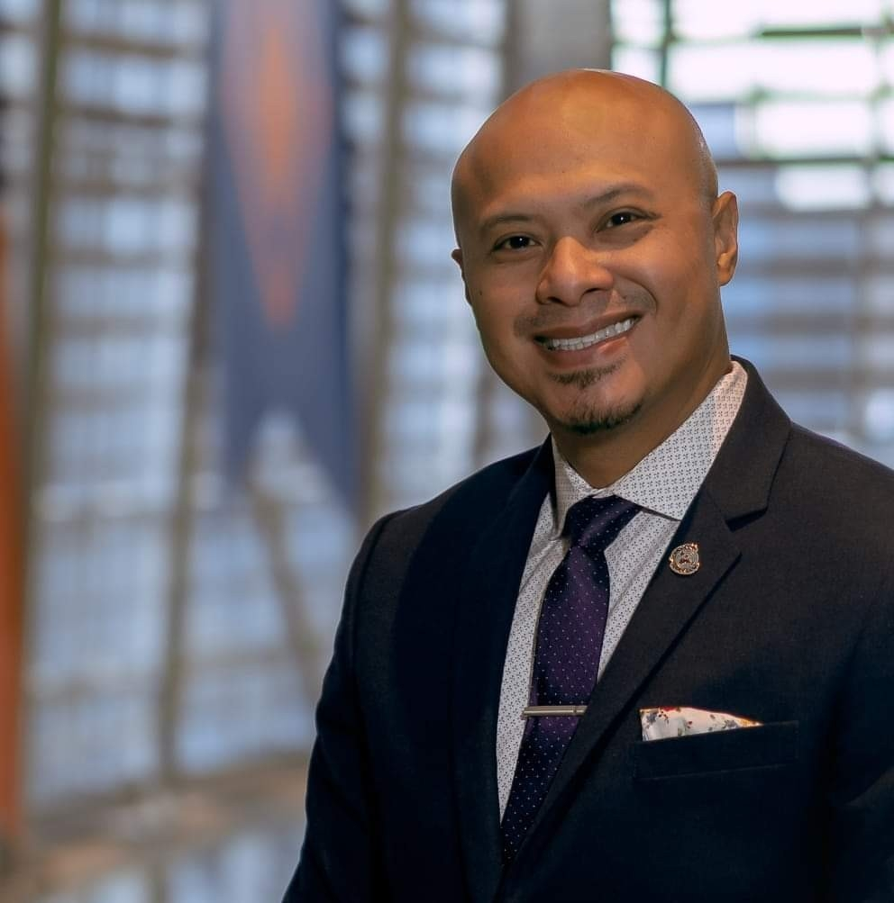

About the GPL Business Exchange
The GPL Business Exchange is a series of seminars designed to build meaningful connections between the School of Management community and the local business community in Syracuse.
More than a lecture series, the Business Exchange is a space for students, faculty, practitioners, and business leaders to exchange ideas, build relationships, and learn from each other. Each event features a speaker-led discussion on a timely topic, followed by networking and refreshments.
What to Expect
Who Should Attend?
The GPL Business Exchange is open to all, including students and academics, accounting and finance practitioners, public sector professionals, and the broader Syracuse business community. Whether you are a student exploring global corporate performance, a practitioner advising clients, or a business leader navigating today's challenges — this series is for you.
"Doing Local Business in a Connected World"
How are global forces reshaping the way local businesses operate, compete, and measure performance?
About This Event
Global supply chains, international reporting standards, cross-border digital platforms, evolving trade policies and tariffs — every local business decision now carries global implications. From the urgent care clinic sourcing medical supplies manufactured overseas to the small manufacturer navigating new tariffs, the line between "local" and "global" has never been thinner.
Our inaugural GPL Business Exchange features a keynote address exploring how these global dynamics are reshaping the way local businesses in Syracuse and beyond operate, compete, and measure performance. A discussion and audience Q&A will follow in Room 404, with snacks and networking in the 4th floor hallway.
Keynote Speaker

Dr. Emad Rahim is an award-winning business leader, TEDx speaker, and Fulbright Scholar dedicated to inclusive economic development. With deep roots in Syracuse, New York, he serves as the Inaugural Entrepreneurship Manager for the Cleantech Accelerator and Syracuse Surge Accelerator at the INSPYRE Innovation Hub, supporting the growth of local tech startups across the Central New York region. Balancing practice with academia, Dr. Rahim operates the consulting firm Inclusive 360 LLC, co-founded downtown Syracuse's BCB retail store, and is an Equity Partner at Ztudium (IntelligentHQ.com). He also guides future leaders as the Kotouc Family Endowed Professor and Chair at Bellevue University. His thought leadership has been featured in Forbes, CEO Magazine, Huffington Post, CLO Magazine, and the NY Post.
Event Schedule
Student Experiential Projects Showcase
The GPL Business Exchange is a conceptual initiative of the Global Corporate Performance course (ACC 400/600) at the Whitman School of Management, Syracuse University. The course examines how global dynamics — from international reporting standards and trade policy to supply chain disruptions and emerging technology — shape the way organizations measure, manage, and communicate performance. Recognizing that local is global, the course and the Business Exchange explore how the forces shaping businesses abroad are equally present in our own backyard. The Business Exchange extends that inquiry beyond the classroom and into the community.
As part of the course, students work in teams on experiential projects that tackle real-world business challenges with international partners and organizations. These projects place students at the intersection of global dynamics and local impact — requiring them to navigate cross-cultural contexts, apply financial and strategic frameworks, and deliver actionable insights to real stakeholders.
Drawn from student weekly reflections and engagement with their partners.
A student team is grappling with how to apply and advocate for financial performance metrics in a context where strong indigenous cultural values shape how communities define success. The project challenges students to think critically about the assumptions embedded in Western accounting frameworks and to develop measurement approaches that respect and integrate local cultural perspectives.
This team is studying the coffee industry in a Southeast Asian country and working to build a framework for promoting coffee entrepreneurship. Students are examining global commodity markets, local production constraints, and the role of trade policy in shaping opportunities for small-scale producers — connecting global supply chain dynamics to local economic development.
A team is exploring unit economics and pricing strategy for a South African mobility-as-a-service startup. The project requires students to analyze cost structures, revenue models, and competitive dynamics in an emerging market where infrastructure, regulation, and consumer behavior differ significantly from developed markets.
A student team is collaborating with the African Export-Import Bank (Afreximbank) on a case writing project. Working directly with bank representatives, students are developing a publishable case study that examines the institution's role in facilitating trade and investment across the African continent — offering a firsthand look at how global financial institutions operate at the intersection of policy, trade, and economic development.
A student team is working with the Harambe Entrepreneur Alliance, a network of young African leaders driving innovation and enterprise across the continent. The project explores how African entrepreneurs navigate global market dynamics, cross-border collaboration, and the challenges of building scalable ventures in diverse economic environments — connecting themes of inclusive growth, diaspora engagement, and global entrepreneurship.
This team is examining a Nigerian agritech and climate-tech startup that uses proprietary technology to process agricultural products for smallholder farmers and converts waste into biochar for carbon removal. Students are analyzing how the company's model integrates global climate goals, supply chain technology, and local agricultural economics — a case study in how innovation at the intersection of food systems, sustainability, and emerging markets can create shared prosperity.
A student team is engaging with a major global integrated logistics and shipping company. The project examines how global trade infrastructure, geopolitical disruptions, supply chain restructuring, and decarbonization pressures are reshaping the logistics industry — offering students a window into how a multinational corporation manages performance across complex, interconnected global operations.
Why Experiential Projects?
These projects are designed to push students beyond the classroom and into the complexities of global business. By working with real organizations on real challenges, students develop the analytical, cross-cultural, and professional skills needed to understand how global forces shape corporate performance — the same theme at the heart of the GPL Business Exchange.